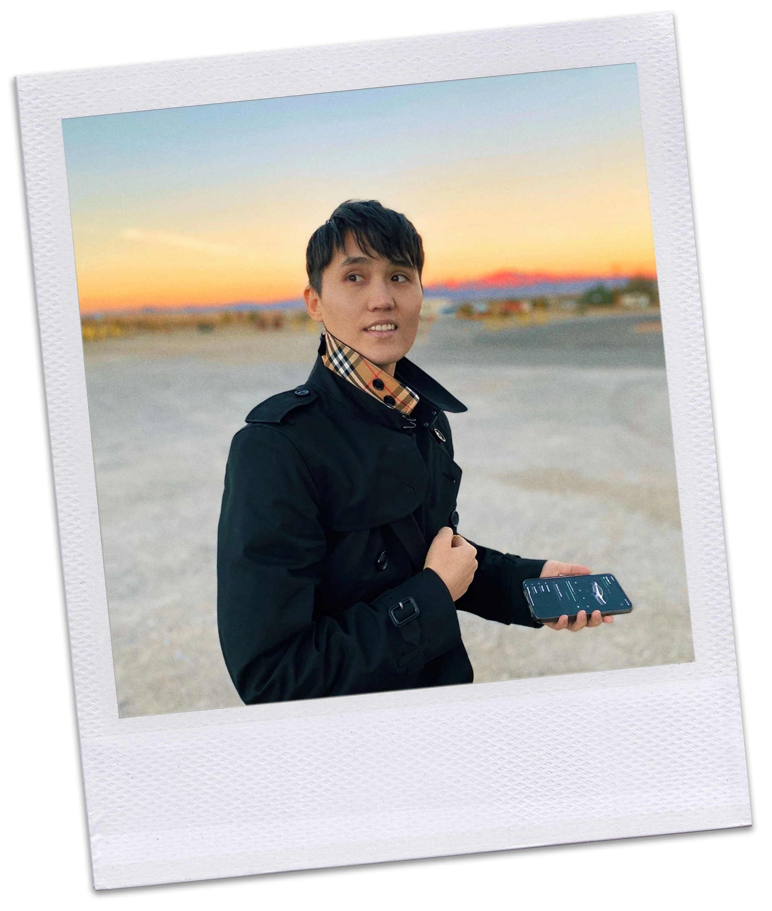

Кто такой Франц Вертфоллен


ведущий Шота Жизни
- писатель
и тонкий психолог.
Он учился во Франции,
специализируясь
на коммуникации
между людьми
и их восприятии информации.
(Университет Поля Верлена,
Communication and information Sciences)
Работал в
штаб квартире
UNESCO
в Париже
и вёл передачу на центральном
телевидении Казахстана.
В 23 года
открыл свою
актёрскую школу,
В 25 издал первую книгу
“Автопортрет”.
Сейчас живёт и работает в Лос-Анджелее.
Хотите подсмотреть за жизнью Франца Вертфоллена,
подписывайтесь на
Сейчас живёт и работает
в Лос-Анджелее.
купить месяц TALKS
купить месяц TALKS1450₽
Хотите оплатить в евро, тенге, гривнах и т.д.?
Пишите нам в правом нижнем углу экрана.
Now
Мы создали Вертфоллен Talks, чтобы ответить
на нашу боль, нехватку сил, времени и скуку